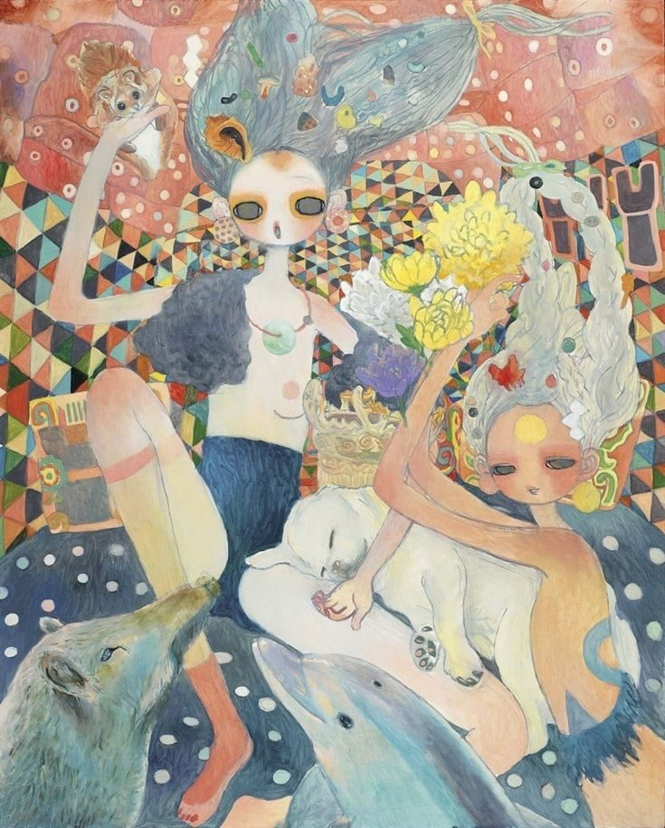

Aya Takano
painter · manga artist · sci-fi essayist




Who she is
Aya Takano is a Japanese painter, manga artist, and science fiction essayist. She was born in Saitama in 1976 and is one of the artists in the Superflat movement.
Her paintings combine exotic animals and landscapes with city scenes. The people in them are thin and androgynous, with large eyes, and they often float in the air.
She is represented by Kaikai Kiki, the company Takashi Murakami started in 2001, and by Galerie Perrotin in Paris and Hong Kong.
Quick facts
- BornDecember 22, 1976, Saitama, Japan
- EducationTama Art University, Tokyo, 2000
- StudioKaikai Kiki
- GalleryGalerie Perrotin
- MovementSuperflat